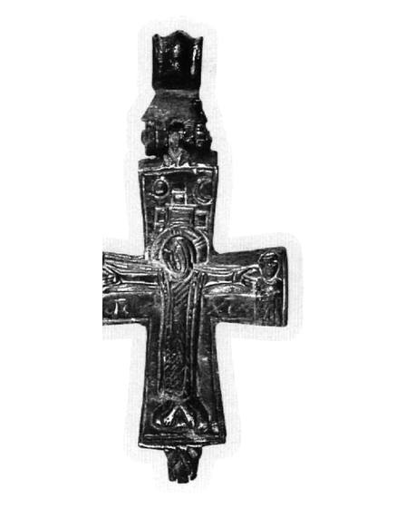
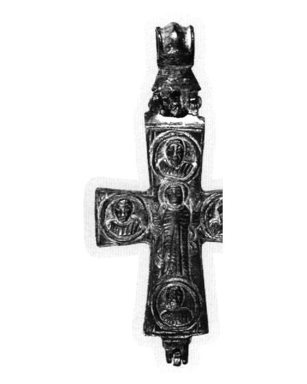

Catalog › CE-0372 · EVA2006-4
Encolpion bivalv de aliaj de cupru, cat. 4, colecție privată
sec. XI sau XII (1001–1200) · loc necunoscut · Colecție privată (Οικογένεια Γ. και Φ. Νοταρά)
double-sided reliquary cross (enkolpion), altul; c. XI sau XII (1001–1200); find spot unknown; kept at Colecție privată (Οικογένεια Γ. και Φ. Νοταρά).




Identificare
- Categorie
- Encolpion bivalv (relicvar)
- Material
- Altul
- Tehnică
- Gravare (incizie)
- Dimensiuni
- Î 72 × L 52 mm
Iconografie
- Avers
- Răstignirea (Hristos în colobium)
- Descriere avers
- Hristos răstignit, între Maica Domnului și Sf. Ioan, înfățișați în întregime, în scară foarte mică, pe brațele orizontale; sub brațele lui Hristos se disting cu greutate litere din inscripțiile obișnuite; în partea de sus tabula ansata, jos suppedaneum trapezoidal pe care Hristos își sprijină picioarele, redate cu grijă, ca și palmele; colobiumul este redat prin linii gravate de direcții diferite; deasupra crucii soarele și luna.
- Revers
- Maica Domnului Orantă; Evangheliști în medalioane
- Descriere revers
- Maica Domnului în rugăciune (δεομένη); pe brațele crucii, în medalioane, patru figuri în bust, care probabil se identifică cu evangheliștii; veșmântul Maicii Domnului este redat prin incizii, iar pe laturi linii curbe mici arată maforionul, care îi acoperă capul și coboară spre jos.
- Inscripții
- ΜΗΤΗΡ ΙΔΕ Ο YIOC COY, ΙΔΟΥ Η ΜΗΤΗΡ COY
- Limba
- Greacă
Datare și atribuire
- Datare
- sec. XI sau XII (1001–1200)
- Centru
- Asia Mică
- Tipologie
- Evangelatou-Notara 2006, ενότητα 1 (cat. 4)
Descoperire
- Context
- Colecție (fără context)
Păstrare și referințe
- Colecție
- Colecție privată (Οικογένεια Γ. και Φ. Νοταρά)
- Bibliografie
- Φ. Ευαγγελάτου-Νοταρά (F. Evangelatou-Notara), Βυζαντινοί χάλκινοι σταυροί σε ιδιωτική συλλογή, în „Δελτίον της Χριστιανικής Αρχαιολογικής Εταιρείας”, 27 (2006), p. 371–380 [Evangelatou-Notara 2006], p. 372–373, cat. nr. 4, reprodusă la Εικ. 4 (p. 373). doi: 10.12681/dchae.496; https://doi.org/10.12681/dchae.496
- Figura
- Εικ. 4
- Planșe
- Evangelatou-Notara 2006, p. 373
- Analogii
- Cruci analoge în diverse colecții: The Glory of Byzantium, 1997, p. 169, nr. 119; Ώρες Βυζαντίου, 2002, p. 188–189, nr. 210; Συλλογές Ευαγγέλου Αβέρωφ, 2000, p. 100, nr. 160β; Συλλογή Γεωργίου Τσολοζίδη, 2001, p. 25, nr. 17 (după autor).
- Observații
- Dimensiuni: 7,2 × 5,2 cm; inel de suspendare 3,2 cm. Material: aliaj de cupru, turnat și gravat; patină verde-castanie. Cele două părți sunt unite prin cuie; în interior se păstrează pământ, deci crucea face parte din puținele cruci cunoscute cu conținut păstrat. Autorul spune că a fost „probabil” realizată în Asia Mică, în sec. XI sau XII, și o așază între crucile făcute în Asia Mică (după figurile de pe brațe, în scară mică). Inelul de suspendare are două caneluri adânci pe lungime. Piesa a fost cumpărată de la anticari din Atena și din Londra (indicație dată pentru întreaga colecție); locul și condițiile descoperirii nu sunt cunoscute. Material: „aliaj de cupru” (κράμα χαλκού), după sursă. Coordonate: nu sunt date în sursă. Atribuirea la Asia Mică este dată de autor ca probabilă.
Citare: Corpus Encolpiorum, CE-0372, Encolpion bivalv de aliaj de cupru, cat. 4, colecție privată, --root/piese/EVA2006-4/ (accesat 2026-10-17).